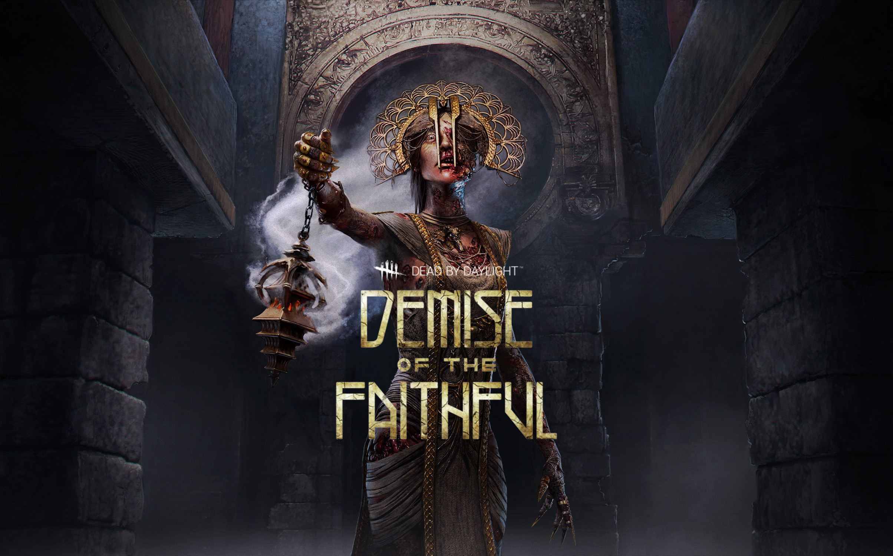

Глава 11:
Demise of the Faithful


Джейн Ромеро — дочь знаменитой актрисы Лоретты Лоуренс, которую она совсем не помнит. Из-за постоянных разъездов матери родители Джейн развелись, когда она была еще младенцем. Джейн воспитал отец — небогатый художник. С детства она разрывалась между обидой на мать за то, что она их бросила, и восхищением перед ее актерским мастерством.
Будучи еще подростком, Джейн в тайне мечтала скопировать талант матери. Она ставила спектакли и играла в них, пробовалась в телерекламу и помогала отцу в студии. В последний год учебы она выступила на государственном соревновании по ораторскому искусству и заняла первое место. ЕЕ выступление заметили на одной радиостанции, и вскоре Джейн пригласили на интервью. Во время прямого эфира ее обаяние и находчивость покорили руководство, и Джейн получила предложение поработать на полставки.
Адирис, младшей из семи детей в семье, было пять лет, когда ее оставили на горячих красных кирпичах лестницы храма очищения в центре Вавилона. Она убедила себя, что боги уготовили ей особую судьбу, и так победила отчаяние. Новую жизнь она посвятила тихому служению: ухаживала за садами, готовила ритуальные блюда и чистила курильницы для благовоний. Ночью она молила богов указать ей истинную цель.
Повзрослев, она начала прислуживать высшим жрицам на ежегодных церемониях почитания морского козла - бога воды и созидания. Она шла по огромным гипостильным залам, поводя курильницей, и густые черные клубы дыма поднимались к холодным каменным колоннам и там растворялись в воздухе. Тревога уступила место блаженству, и она ощущала близость богов как никогда. Каждый день она трудилась не покладая рук, выполняла свои обязанности и принимала новые, прислуживая жрицам во время ритуалов очищения.


Особая способность:
Чем глубже чума проникала в ее тело, тем ужаснее оно становилось: пальцы почернели, шея поросла гроздьями уродливых опухолей, а в горле клокотала кровавая рвота.
Очищение от мерзости
"Очищение от мерзости" позволяет заражать предметы и выживших и вызывать нескончаемую эпидемию. Зажмите кнопку силы, чтобы зарядить "Очищение от мерзости". Отпустите, чтобы выпустить струю заразной желчи. Выживший, по которому попадет атака, будет заражен. Попав по предмету, вы заразите его на какое-то время. Если выживший вступит в контакт с зараженным предметом, то тоже заразится.
Выживший, шкала заражения которого заполнится целиком, подвергнется эффекту "Ослабление" и получит ранение. Его будет рвать через случайные промежутки времени.
Особая способность: поглощение скверны
Зараженные выжившие могут излечиться от болезни и восстановить здоровье, совершив омовение в купели преданности. После этого купель становится отравленной, и Чума может поглотить из нее скверну и развить свою силу. Зажмите кнопку взаимодействия, находясь у отравленной купели преданности, чтобы преобразовать "Очищение от мерзости" в "Очищение от скверны". Это действие также очистит купель.
Особая атака: очищение от скверны
Использовав умение "Поглощение скверны", вы ненадолго замените "Очищение от мерзости" на "Очищение от скверны". "Очищение от скверны" мгновенно наносит урон любому выжившему, задетому струей, но больше не заражает выживших и предметы
Персонажи
Джейн Ромеро
Будучи еще подростком, Джейн в тайне мечтала скопировать талант матери. Она ставила спектакли и играла в них, пробовалась в телерекламу и помогала отцу в студии. В последний год учебы она выступила на государственном соревновании по ораторскому искусству и заняла первое место. ЕЕ выступление заметили на одной радиостанции, и вскоре Джейн пригласили на интервью. Во время прямого эфира ее обаяние и находчивость покорили руководство, и Джейн получила предложение поработать на полставки.
Читать дальше...
Личные навыки:


Чума
Повзрослев, она начала прислуживать высшим жрицам на ежегодных церемониях почитания морского козла - бога воды и созидания. Она шла по огромным гипостильным залам, поводя курильницей, и густые черные клубы дыма поднимались к холодным каменным колоннам и там растворялись в воздухе. Тревога уступила место блаженству, и она ощущала близость богов как никогда. Каждый день она трудилась не покладая рук, выполняла свои обязанности и принимала новые, прислуживая жрицам во время ритуалов очищения.
Читать дальше...


Особая способность:
"Очищение от мерзости"
Очищение от мерзости
"Очищение от мерзости" позволяет заражать предметы и выживших и вызывать нескончаемую эпидемию. Зажмите кнопку силы, чтобы зарядить "Очищение от мерзости". Отпустите, чтобы выпустить струю заразной желчи. Выживший, по которому попадет атака, будет заражен. Попав по предмету, вы заразите его на какое-то время. Если выживший вступит в контакт с зараженным предметом, то тоже заразится.
Выживший, шкала заражения которого заполнится целиком, подвергнется эффекту "Ослабление" и получит ранение. Его будет рвать через случайные промежутки времени.
Особая способность: поглощение скверны
Зараженные выжившие могут излечиться от болезни и восстановить здоровье, совершив омовение в купели преданности. После этого купель становится отравленной, и Чума может поглотить из нее скверну и развить свою силу. Зажмите кнопку взаимодействия, находясь у отравленной купели преданности, чтобы преобразовать "Очищение от мерзости" в "Очищение от скверны". Это действие также очистит купель.
Особая атака: очищение от скверны
Использовав умение "Поглощение скверны", вы ненадолго замените "Очищение от мерзости" на "Очищение от скверны". "Очищение от скверны" мгновенно наносит урон любому выжившему, задетому струей, но больше не заражает выживших и предметы
Dead By Daylight
Контакты:
Помощь:
предложения отправлят сюда
@mail: dbd-help@mail.ru
D
E
A
D
E
A
D
B
Y
Y
D
A
Y
L
I
G
H
T
A
Y
L
I
G
H
T